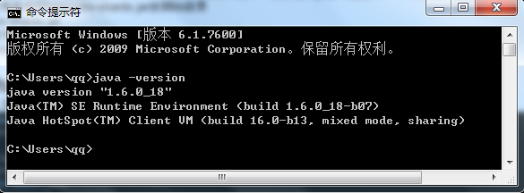
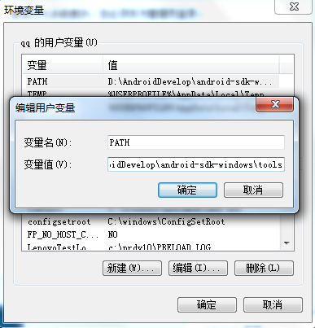
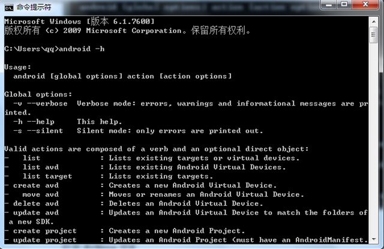
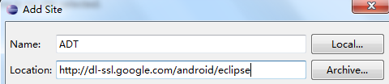
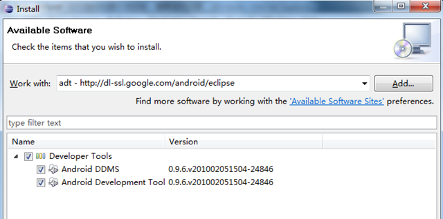
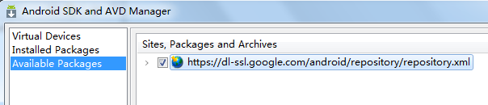
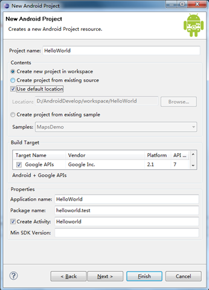
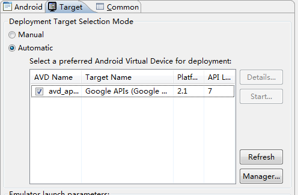
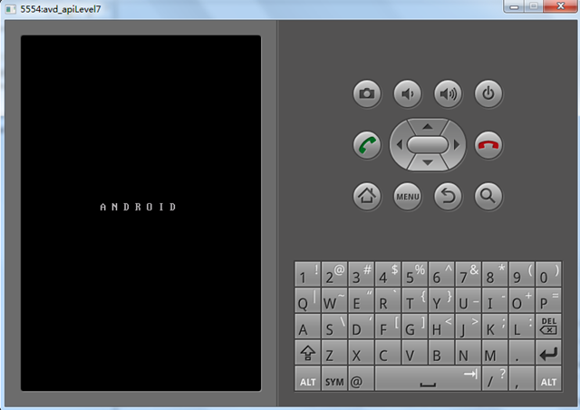

环境搭建及HelloWorld
在开始Android开发之旅启动之前，首先要搭建环境，然后创建一个简单的HelloWorld。本文的主题如下：
1、环境搭建1.1、JDK安装
1.2、Eclipse安装
1.3、Android SDK安装
1.4、ADT安装
1.5、创建AVD
2、HelloWorld
1、环境搭建
1.1、JDK安装
如果你还没有JDK的话，可以去这里下载，接下来的工作就是安装提示一步一步走。设置环境变量步骤如下：
我的电脑-<属性-<高级-<环境变量-<系统变量中添加以下环境变量：JAVA_HOME值为： D:\Program Files\Java\jdk1.6.0_18（你安装JDK的目录）
CLASSPATH值为：.;%JAVA_HOME%\lib\tools.jar;%JAVA_HOME%\lib\dt.jar;%JAVA_HOME%\bin;
Path: 在开始追加 %JAVA_HOME%\bin;
NOTE：前面四步设置环境变量对搭建Android开发环境不是必须的，可以跳过。
安装完成之后，可以在检查JDK是否安装成功。打开cmd窗口，输入java –version 查看JDK的版本信息。出现类似下面的画面表示安装成功了：

1.2、Eclipse安装
如果你还没有Eclipse的话，可以去eclipse官网下载，解压之后即可使用。
1.3、Android SDK安装
在Android Developers下载android-sdk_r05-windows.zip，下载完成后解压到任意路径。
1、运行SDK Setup.exe，点击Available Packages。如果没有出现可安装的包，请点击Settings，选中Misc中的"Force https://..."这项，再点击Available Packages。
2、选择希望安装的SDK及其文档或者其它包，点击Installation Selected、Accept All、Install Accepted，开始下载安装所选包。
3、在用户变量中新建PATH值为：Android SDK中的tools绝对路径（本机为D:\AndroidDevelop\android-sdk-windows\tools）。

“确定”后，重新启动计算机。重启计算机以后，进入cmd命令窗口，检查SDK是不是安装成功。
运行 android –h 如果有类似以下的输出，表明安装成功：

1.4、ADT安装
1、打开 Eclipse IDE，进入菜单中的 "Help" -< "Install New Software"
2、点击Add...按钮，弹出对话框要求输入Name和Location：Name自己随便取，Location输入http://dl-ssl.google.com/android/eclipse。如下图所示：

3、确定返回后，在work with后的下拉列表中选择我们刚才添加的ADT，我们会看到下面出有Developer Tools，展开它会有Android DDMS和Android Development Tool，勾选他们。 如下图所示：

然后就是按提示一步一步next。
完成之后：
1、选择Window < Preferences...
2、在左边的面板选择Android，然后在右侧点击Browse...并选中SDK路径，本机为：
D:\AndroidDevelop\android-sdk-windows
3、点击Apply、OK。配置完成。
1.5、创建AVD
为使Android应用程序可以在模拟器上运行，必须创建AVD。
1、在Eclipse中。选择Windows < Android SDK and AVD Manager
2、点击左侧面板的Virtual Devices，再右侧点击New
3、填入Name，选择Target的API，SD Card大小任意，Skin随便选，Hardware目前保持默认值
4、点击Create AVD即可完成创建AVD
注意：如果你点击左侧面板的Virtual Devices，再右侧点击New ，而target下拉列表没有可选项时，这时候你：
5、点击左侧面板的Available Packages，在右侧勾选https://dl-ssl.google.com/android/repository/repository.xml，如下图所示：

6、然后点击Install Selected按钮，接下来就是按提示做就行了
要做这两步，原因是在1.3、Android SDK安装中没有安装一些必要的可用包（Available Packages）。
2、HelloWorld
1、通过File -< New -< Project 菜单，建立新项目"Android Project"
2、然后填写必要的参数，如下图所示：（注意这里我勾选的是Google APIs，你可以选你喜欢的，但你要创建相应的AVD）

相关参数的说明：
a) Project Name: 包含这个项目的文件夹的名称。
b) Package Name: 包名，遵循JAVA规范，用包名来区分不同的类是很重要的，我用的是helloworld.test。
c) Activity Name: 这是项目的主类名，这个类将会是Android的Activity类的子类。一个Activity类是一个简单的启动程序和控制程序的类。它可以根据需要创建界面，但不是必须的。
d) Application Name: 一个易读的标题在你的应用程序上。
e) 在"选择栏"的 "Use default location" 选项，允许你选择一个已存在的项目。
3、点击Finish后，点击Eclipse的Run菜单选择Run Configurations…
4、选择“Android Application”，点击在左上角（按钮像一张纸上有个“+”号）或者双击“Android Application”，有个新的选项“New_configuration”（可以改为我们喜欢的名字）。
5、在右侧Android面板中点击Browse…，选择HelloWorld
6、在Target面板的Automatic中勾选相应的AVD，如果没有可用的AVD的话，你需要点击右下角的Manager…，然后新建相应的AVD。如下图所示：

7、然后点Run按钮即可，运行成功的话会有Android的模拟器界面，如下图所示：
